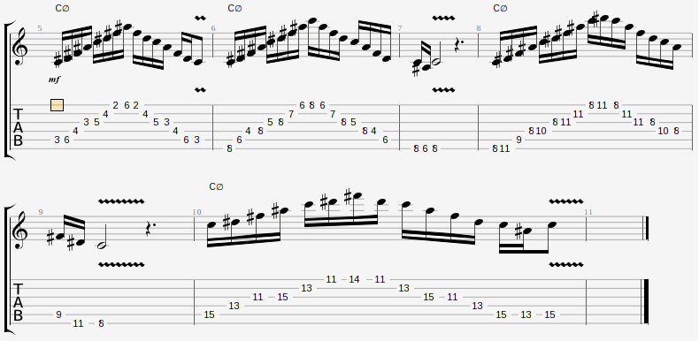
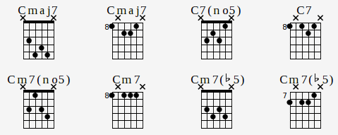

Guitarra
Índice
- Ubicación de notas en el diapasón
- Escalas...
- Escalas de C y A-
- Escalas
Pentatónicas y de Blues
- Modos griegos
- Escala menor
armónica
- Escala menor melódica
- Escala disminuída
- Escala aumentada
- Grados
- Digitaciones...
- Escala
mayor de C
- Escala
de Blues menor de A
- Escala
de Blues mayor de A
- Modo
frigio dominante en E
- Modos griegos
- Arpegios...
- Arpegio de C
- Arpegio de C-
- Arpegios de C7M, C7, C-7 y C∅
- Arpegios con tapping (1)
- Arpegios con tapping (2)
- Acordes...
- Tipos
- Nomenclatura
- Formación...
- Tríadas
- Cuatríadas
- Ejemplo (de
Em7)
- Dibujos de
acordes...
- Acordes
básicos
- Acordes
7ma abreviados
- Inversiones
- Gráfico
general
- Composición...
- Tonalidades
- Armonía de escalas
- Tensión en los acordes
- Haciendo armonías
- Modulación
- Tips
- Técnica
- Tips
- Improvisación
- Tips
__ 1
2 3
4 5
6 7
8 9 10
11 12
\
e
||--F--|-----|--G--|-----|--A--|-----|--B--|--C--|-----|--D--|-----|--E--|
B
||--C--|-----|--D--|-----|--E--|--F--|-----|--G--|-----|--A--|-----|--B--|
G
||-----|--A--|-----|--B--|--C--|-----|--D--|-----|--E--|--F--|-----|--G--|
D
||-----|--E--|--F--|-----|--G--|-----|--A--|-----|--B--|--C--|-----|--D--|
A
||-----|--B--|--C--|-----|--D--|-----|--E--|--F--|-----|--G--|-----|--A--|
E
||--F--|-----|--G--|-----|--A--|-----|--B--|--C--|-----|--D--|-----|--E--|
__/
Escala mayor de C:
1° 2° 3° 4° 5° 6° 7°
8°
C D E F G
A B C
1 1 ½ 1
1 1
½ (3-7)
Escala menor de A:
1° 2° 3° 4° 5° 6° 7°
8°
A B C D E
F G A
1 ½ 1 1
½ 1 ½
(2-5)
-> Relación:
[!] En el 6° grado de la escala de C empieza la escala de A-
(A es el relativo menor de C).
[!] En el 3° grado de la escala de A- empieza la escala de C (C es el
relativo mayor de A).
Esta relación tiene que ver con los modos griegos, la escala
menor natural es el 6° modo (eólico).
Es una escala de 5 sonidos:
- Si a una escala mayor le quitamos el 4° y 7° grado, nos queda una escala
pentatónica mayor
- Si a una escala menor natural le quitamos el 2° y 6° grado, nos queda una
escala pentatónica menor
La escala de Blues es una escala pentatónica a la que se le agrega la blue note (3° b o # -según si es menor o
mayor-).
De la escala mayor (por ejemplo la de C), surgen más escalas al correr el
orden de las notas. Estas escalas tienen las mismas notas que la escala
mayor... se llaman:
1) Jónico
2) Dórico
3) Frigio
4) Lidio
5) Mixolidio
6) Eólico
7) Locrio
… y el orden de las notas surge de hacer la escala mayor desde un grado de
la escala.
Por ejemplo: la escala de C es...
1° 2° 3° 4° 5° 6° 7°
C D E F
G A B
...entonces el modo frigio es igual pero empezando del 3° grado:
1° 2° 3° 4° 5° 6° 7°
E F G A B
C D
Parece un cambio muy simple pero tocar la escala frigia da un sonido
totalmente diferente al que se da tocando la escala mayor o “modo jónico”.
Con esta nomenclatura, la escala menor antigua (que partía del 6° grado)
sería el “modo eólico”.
Con esto separamos la escala mayor en 7 escalas. La ventaja es poder hacer
una canción en -por ejemplo- la tonalidad mixolidia, o el modo que sea.
Improvisando:
Podés usar el modo correspondiente a cada acorde en el momento que
corresponda. Ejemplo: Base en C, D, E. Improvisarías en los modos jónico,
dórico y mixolidio respectivamente.
Mayores y menores:
Modos mayores: Jónico, Lidio, Mixolidio
Modos menores: Dórico, Frigio, Eólico, Locrio
Notas características de cada
modo:
Cada uno tiene una nota característica que lo diferencia de una
escala mayor/menor común y corriente...
Dórico: 6° aumentada
Frigio: 2° bemol
Lidio: 4° aumentada
Mixolidio: 7° menor
Locrio: 2° y 5° bemol
Conviene resaltar esas notas al tocar para darle una sonoridad acorde al
modo que está sonando.
Los modos están en la armonía:
Si vos tocás sobre un acorde G la escala jónica de C, va a sonar mixolidio
igual. En ese caso al cerrar, habría que terminar el solo en G. Si estás
improvisando en C mayor sobre un acorde C, y después pasás a un acorde D-,
primero va a sonar jónico y después dórico: La gracia está en plantarte en
un modo determinado, (el dórico, por ejemplo) con un acorde D- sonando de
fondo, e improvisar con la escala dórica de D.
Uso de los modos a nivel melódico:
Maj7 => Lidio o Jónico
m7 => Dórico o Eólico
7 => Mixolidio (cuando resuelve a un acorde
mayor)
7 => Frigio (cuando resuelve a un acorde menor)
m7b5 => Locrio
Es igual a la escala menor natural pero con el 7° grado aumentado.
Lo más común es utilizar el 5° modo de la escala, y en ese caso estaríamos
hablando del modo frigio dominante. Este modo se puede
usar cuando estamos en un acorde dominante, cuando resuelve a un acorde
menor.
1° Tónica
2° Supertónica
3° Mediante / Modal
4° Subdominante
5° Dominante
6° Superdominante
7° Subtónica / Sensible
-> Un acorde 7 es dominante.




Diadas: 1° y 3°
Tríadas: 1°, 3° y 5°
Cuatríadas: 1°, 3°, 5° y
7°
Acodes modificados:
Pueden agregarse los grados 9°, 11° y 13°
Inversiones:
- 1° inversión: con la 3° en el bajo
- 2° inversión: con la 5° en el bajo
- 3° inversión: con la 7° en el bajo
Ejemplos:
D (Re mayor)
G- (Sol menor)
F-7 (Fa menor con séptima menor)
F-7M (Fa menor con séptima mayor)
B° (Si disminuído)
B°7 (Si disminuído -con séptima disminuída-)
B∅ = Bm7b5 (Si semidisminuído -con séptima menor-)
Dsus4 (Re mayor suspendido 4°) *
E7M5+ (Mi séptima mayor con quinta aumentada)
* los acordes suspendidos "suspenden" la 3°, cambiándola por la 2° o la 4°
Defaults:
- Si no se indica - es mayor.
- 7 a secas es séptima menor. Para séptima mayor se
escribe 7M.
- ° = dim = 5b = disminuído.
- + = aug = aumentada.
Se utiliza la superposición de terceras. Utilizando una escala determinada,
se deben obtener los grados 1°, 3°, 5° del acorde. Las terceras pueden ser:
3° mayor (3M): 2 tonos ↑
3° menor (3m): 1 tono y medio ↑
Una vez identificada la 3°, hay que identificar la 5° (que es la 3° de la
3°).
El acorde se va a determinar con las siguientes reglas:
3° 5°
3M + 3m = Tríada mayor
3m + 3M = Tríada menor
3M + 3M = Tríada aumentada
3m + 3m = Tríada disminuída
A la tríada obtenida con el proceso anterior, se le debe agregar el 7°
grado. Las séptimas pueden ser:
7° mayor (7M): ½ tono ↓
7° menor (7m): 1 tono ↓
La 7° es la 3° de la 5°. Las reglas son:
Tríada 7°
Mayor + 3M = 7M
Mayor + 3m = 7
Menor + 3M = -7M
Menor + 3m = -7
Aumentada + 3m = aug7
Disminuída + 3M = m7b5
Disminuída + 3m = dim7


Una canción está en 1 o más tonalidades. El cambio entre tonalidades se
denomina modulación.
Una tonalidad se basa en una escala, que es básicamente una sucesión de
notas. En principio, si un tema está en la tonalidad de (por ejemplo) A- (la
menor), cualquier nota de la escala de A- podría sonar: A, B, C, D, E, F, o
G.
Los acordes que pueden sonar sobre una escala surgen de las reglas de
formación de acordes. Como la armonía de una escala se puede transportar a
cualquier tónica, en este cuadro se resumen las de la escala mayor, menor, y
menor armónica:
Esc/Gra
|
1°
|
2°
|
3°
|
4°
|
5°
|
6°
|
7°
|
| Mayor |
7M |
-7 |
-7 |
7M |
7 |
-7 |
∅ |
| Menor |
-7 |
∅ |
7M |
-7 |
-7 |
7M |
7 |
| Menor armónica |
-7M |
∅ |
7M5+ |
-7 |
79b |
7M |
°7 |
Para
que una canción termine “bien”, el tema debería terminar en su tónica.
Cuando digo “bien” me refiero a que termina con un grado de tranquilidad,
que da a entender que la canción terminó.
Esto sirve mucho para saber en qué tonalidad está una canción, ya que la
mayoría cumple esta “regla”. Es cuestión de fijarse en qué nota termina y
listo.
La razón es que cada grado de una escala genera una determinada tensión,
siendo el 5° grado (“dominante”) el que más tensión genera, y el 1° grado
(“tónica”) el que menos.
Ej: Probar la progresión de acordes: C, F, D-, G => Si no la terminás en
C, da la sensación de que te vas a morir.